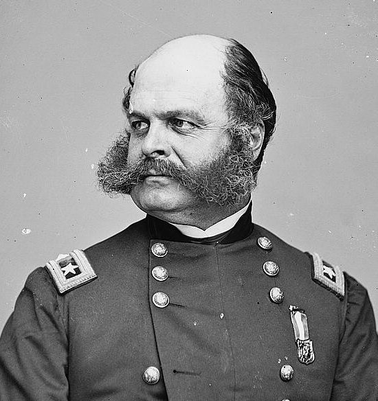
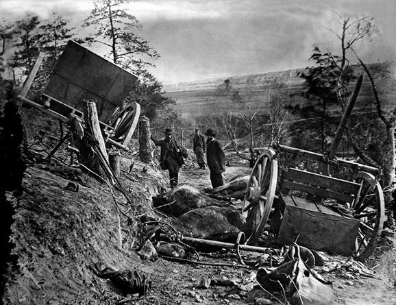

|
The Battle of Fredericksburg (Virginia) in December of
1862, was a tactical victory for the South. But rather than
being a major cause for celebration, Fredericksburg only
slowed, rather than stopped the Union push towards Richmond.
The battle had its origins in a change in leadership on
the Union side of the war effort. Frustrated with General
George B. McClellan's sluggishness in moving against Robert
E. Lee's Army of Northern Virginia in the weeks following
|

Ambrose Burnside's failures at Fredericksburg
laid the groundwork for his removal from command in January of 1863.
|
the northern victory at Antietam in September, 1862, Lincoln
decided to replace him as commander of the Army of the
Potomac for the second, and final time. His successor,
General Ambrose E. Burnside, assumed command on November
7th. Urged on by impatient superiors, Burnside converted the
Army's cautious march southwest into a 40-mile quick march
across the Virginia countryside to Fredericksburg, in an
attempt to secure a direct route to the Confederate capital
at Richmond before Lee could regather his army and respond.
Burnside was quick to implement his plans, and by November
17th the lead units of his Army arrived on Stafford Heights
on the north bank of the Rappahannock River, opposite the
town of Fredericksburg.
Burnside called for pontoon bridge equipment, however,
due to a combination of bad weather and bureaucracy, the
pontoons did not arrive until November 25. The delay gave
Lee the time necessary to move General James Longstreet's
corps to take up positions along the terraced slopes south
of town. Lee did not know where the Federal Army would cross
the river, so, when General "Stonewall" Jackson's troops
arrived a few days later, he sent them as far as 20 miles
down river to cover all potential crossings.
Reasoning that if he moved quickly he could concentrate
his superior force on Longstreet's corps alone, Burnside
ordered two pontoon spans erected opposite the city, and one
more a mile downstream. In the early morning hours of
December 11th, Union engineers began laying pontoons, but
soon gave up the effort in the face of withering musket fire
from Mississippians on the southern bank. After nine
unsuccessful attempts to complete the bridges throughout the
day, a small force of volunteers finally managed to cross
the river at dusk and drive the rebel sharpshooters from the
town. Burnside's army began crossing into Fredericksburg
during the night.
Burnside issued no orders for an attack on the morning of
the 12th, and, instead, the Federal troops spent the day
looting the town. Meanwhile, having observed the enemy
crossing, Lee sent for Jackson's scattered corps. A quick
march brought the corps to the field and in position on
Longstreet's right by dawn on the 13th.
Burnside planned to attack Longstreet's positions with
part of his army, while launching a strong flanking attack
on Lee's right with 55,000 men. At 8:30 a.m., General George
B. Meade's brigade of Pennsylvanians moved against Jackson,
only to be beaten back by both frontal and flanking
artillery fire. Resuming their attack, Meade's men stumbled
into a section of woods that had been left unprotected by
Jackson, and briefly managed to pierce the Rebel lines.
Anticipating this, however, Jackson counterattacked with his
reserves, driving the Federals back to their original
positions.
On the Union right, Burnside ordered a series of assaults
over the plain south of town toward a sunken road and stone
wall along the base of Marye's Heights. Over the course of
the afternoon, one Union brigade after another was hurled
against the stone wall, only to be shattered and repulsed by
the artillery on the crest of Marye's Heights and the
|

Some of the damage wrought by the
Battle of Fredericksburg.
|
musketry of the Longstreet's infantry, standing four deep in
the sunken road along its base. In one 600 yard section of
the line, over 30,000 Federals were sent against a position
occupied by 7,000 Confederates, who shot them down in en
masse, leaving 9,000 dead and wounded in their front. It was
at this point in the battle that Lee turned to Longstreet
and uttered his famous comment, "It is well that war is so
terrible! We should grow too fond of it!"
As the day came to a close, Burnside withdrew his
battered brigades to the town while the cries of the
wounded, "weird, unearthly, terrible to hear and bear," rose
in the bitter-cold winter night. Burnside's determination
to personally lead a resumption of the attacks the next day
met with stubborn resistance from all of his subordinates,
who saw no better prospects for success. Burnside
reluctantly withdrew his army across the river over the next
two days, pulling up his bridges behind him.
As the armies settled into winter camps, the tactical
victory of the battle of Fredericksburg belonged to Robert
E. Lee. However, the Confederates had lost over 5,000 men
that they could not easily replace. While the Federals had
lost more than twice that number, the steady stream of
replacements from the North soon brought the Army of the
Potomac back to its original strength. The real legacy of
the battle was the devastating impact on the morale of the
Northern populace and its army. Hearing of the terrible,
tragic losses of men, Lincoln sadly remarked, "If there is a
worse place than Hell, I am in it." Seven months would pass,
two more commanders would succeed Ambrose Burnside, and the
battles of Chancellorsville and Gettysburg would be fought
before the Army of the Potomac would regain its esprit de
corps.
Source: Joan Waugh, ed., Facts on File Encyclopedia of American
History: Civil War and Reconstruction, 1856 to 1869 (New York: Facts on
File, 2003), 139-141.
|